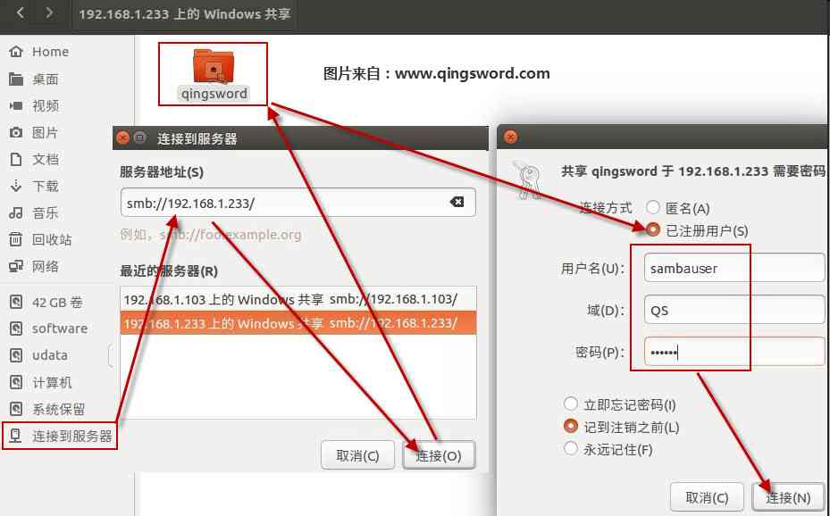

[RHEL]-18-使用Samba服务共享文件
引言
这篇文章将介绍一款通用的文件共享软件Samba，它能够提供Linux系统与Windows系统之间文件的共享服务。
文章目录
0×1.Samba安装与配置详解
Samba是一款基于SMB(Server Messages Block)协议开发的局域网文件共享服务程序，它不仅能实现Linux系统之间的文件共享，还能跨平台实现Linux到Windows之间的文件共享。
#使用yum仓库安装samba服务端 [root@qingsword.com ~]# yum install -y samba
samba主配置文件位置在"/etc/samba/smb.conf"，首先对这个配置进行备份，然后将注释项全部删除：
#备份 [root@qingsword.com ~]# cp /etc/samba/smb.conf /etc/samba/smb.conf.bk #删除注释项 [root@qingsword.com ~]# grep -v "#" /etc/samba/smb.conf.bk | grep -v ";" | grep -v "^$" > /etc/samba/smb.conf #查看剩下生效的配置 [root@qingsword.com ~]# more /etc/samba/smb.conf #全局配置区 [global] #工作组名称 workgroup = MYGROUP #提供给连接者的信息%v会显示当前samba版本号，建议修改成具有伪装意义的文字例如"Windows Server 2008" server string = Samba Server Version %v #日志文件保存路径 log file = /var/log/samba/log.%m #日志文件最大容量50Kb max log size = 50 #安全验证方式，一共有四种 # share 共享方式直接访问，安全性很差 # user 需由SMB服务验证口令后才可建立访问，更加安全 # server 使用独立的远程主机验证，集中管理 # domain 使用PDC验证 security = user #定义用户后台的类型，共有三种 # smbpasswd 使用SMB服务的smbpasswd命令给系统用户设置smb密码 # tdbsam 创建数据库文件并使用pdbedit建立smb独立的用户 # ldapsam 基于LDAP服务进行帐户验证 passdb backend = tdbsam #是否当共享打印机设备 load printers = yes #打印机参数 cups options = raw #登录用户家目录配置（相当于创建了一个用于samba共享的用户，这个用户的家目录就会出现在共享列表中，如果要手动指定一个共享文件夹，可以将这一个区域删除） [homes] #此共享的描述信息 comment = Home Directories #指定共享是否在"网上邻居"中可见 browseable = no #可读写属性，如果为no，则只读 writable = yes #打印机共享配置 [printers] comment = All Printers #共享的路径（在此路径下的文件都能被客户端访问） path = /var/spool/samba browseable = no #是否对所有人可见 guest ok = no writable = no printable = yes
一个标准的共享项配置如下：
#将下面这种共享区块放入主配置文件smb.conf中即可 [qingsword] comment = Welcome to my website qingsword.com path = /home/qingsword.com public = no writable = yes
Ps：smb.conf主配置文件中的语句有一个特点，等号两边必须有空格，否则配置参数不正确。
0×2.使用Samba配置共享实例
通过上面的简单介绍，下面来实例配置一个Samba共享。
实验环境：
RHEL7服务端，安装了samba服务，IP 192.168.1.233/24；
Ubuntu客户端，IP 192.168.1.105/24；
Windows客户端，IP 192.168.1.110/24；
三者处于同一个局域网且能够互相Ping通；
1）首先配置服务端iptables：
#iptables不是本文重点，所以直接清空其规则，然后保存，否则会影响到正常的共享访问 [root@qingsword.com ~]# iptables -F [root@qingsword.com ~]# service iptables save
2）修改主配置文件
#删除了不用的打印机共享配置，更改后的主配置文件如下 [root@qingsword.com ~]# vim /etc/samba/smb.conf [global] #修改工作组名称为QS（可自定义） workgroup = QS #伪装成Win共享 server string = Windows Share Group log file = /var/log/samba/log.%m max log size = 50 security = user passdb backend = tdbsam #新的共享配置（这个中括号中的共享名称在挂载时要用到） [qingsword] comment = qingsword.com Directories public = no writable = yes #共享目录 path = /home/qingsword.com
3）创建共享文件夹
#与主配置中path参数后的路径一致 [root@qingsword.com ~]# mkdir /home/qingsword.com
4）创建用于登录samba的共享用户
#创建一个本地用户，稍后会将其添加到smb用户数据库中 [root@qingsword.com ~]# useradd sambauser -s /sbin/nologin #因为smb主配置文件中密码数据库后台类型为"tdbsam"，需要使用pdbedit命令将这个本地用户加入到smb服务的用户数据库中，并给这个用户设置一个密码，用于访问samba共享文件夹 [root@qingsword.com ~]# pdbedit -a -u sambauser #查看smb服务的用户数据库列表包含哪些用户 [root@qingsword.com ~]# pdbedit -L sambauser:1001: #可以使用-x参数来删除数据库中的某个用户，例如 [root@qingsword.com ~]# pdbedit -x sambauser #将共享目录的所有者和属组改成sambauser [root@qingsword.com ~]# chown -R sambauser:sambauser /home/qingsword.com/
5）更改SElinux域和安全上下文
[root@qingsword.com ~]# setsebool -P samba_enable_home_dirs=on [root@qingsword.com ~]# semanage fcontext -a -t samba_share_t /home/qingsword.com [root@qingsword.com ~]# restorecon -Rv /home/qingsword.com/ restorecon reset /home/qingsword.com context unconfined_u:object_r:home_root_t:s0->unconfined_u:object_r:samba_share_t:s0
6）重启smb服务，并设置成开机自启动
[root@qingsword.com ~]# systemctl restart smb [root@qingsword.com ~]# systemctl enable smb
之后在Windows客户端中打开一个文件夹窗口，在文件夹的地址栏中输入"\\192.168.1.233"回车后即可出现验证窗口，输入上面配置的sambauser用户名和密码，就能够打开服务端的共享文件夹了，能够在其中创建删除文件，就像是本地的文件夹一样
在ubuntu系统中如果安装了图形界面，可以打开文件窗口，如下图所示，输入对应的samba服务器的IP，验证用户后就可以登录到共享目录了：
但一般服务器上都没有安装图形界面，想要在终端模式下访问共享可以安装cifs-utils工具，如下：
#安装 [root@qingsword.com ~]# yum -y install cifs-utils #创建验证文件 [root@qingsword.com ~]# vim auth.samba username=sambauser password=123456 domain=QS #修改验证文件权限（主要是为了安全考虑） [root@qingsword.com ~]# chmod 600 auth.samba #创建本地挂载目录 [root@qingsword.com ~]# mkdir /qs #编辑fstab文件，新增一条挂载规则，使用刚才创建的验证文件来验证，类型为cifs，将服务器上的qingsword共享挂载到本地的/qs目录 [root@qingsword.com ~]# vim /etc/fstab //192.168.1.233/qingsword /qs cifs credentials=/root/auth.samba 0 0 #将/etc/fstab文件中所添加的所有挂载项都挂载上 [root@qingsword.com ~]# mount -a #进入/qs目录就能够看到服务器共享文件夹中的内容了 [root@qingsword.com ~]# cd /qs [root@qingsword qs]# ls 123.txt qing #如果不想修改fstab，仅使用mount命令挂载，可以如下，同样是将服务器的samba共享目录挂载到本地的/qs目录 [root@qingsword.com ~]# mount -t cifs -o username=sambauser,password=123456 //192.168.1.233/qingsword /qs